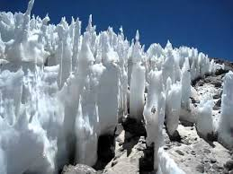

PENITENTES
Encontradas em regiões de elevada altitude, como a Cordilheira dos Andes, essas agulhas de gelo e neve podem atingir 4 m de altura. Acontecem quando o sol bate na neve plana e alguns pontos aleatórios...
PARÉLIO
Duas condições são essenciais para a existência dessas manchas brilhantes: a presença de cristais de gelo no ar e o Sol próximo ao horizonte. O fenômeno óptico é resultado da reflexão e da refração da...
.jpg)
TURBILHÃO DE FOGO
Esse assustador redemoinho de chamas é um fenômeno esporádico que surge em campos, matas e florestas devastados por incêndios. Ele é gerado quando ventos fortes criam no local uma espiral ascendente d...
.jpg)
RELÂMPAGOS VULCÂNICOS
Os cientistas ainda não têm total clareza das causas desse fenômeno meteorológico, mas acreditam que os raios e as luzes coloridas que surgem na cratera de um vulcão em atividade são resultado da reaç...
.jpg)
ARCO-ÍRIS DE FOGO
Chamado cientificamente de nuvem iridescente, o fenômeno óptico dos arco-íris de fogo ocorre quando os raios de sol incidem sobre pequenas gotas de água e cristais de gelo que compõem a nuvem. Nesse m...
.jpg)